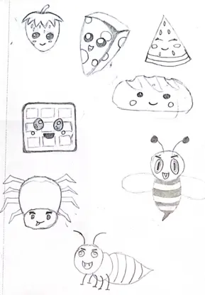
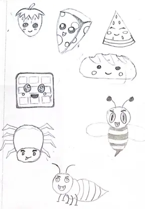

Grundlæggende Animation
Temaopgave
Temaopgaven bestod af at lave et spil - hvor vi selv skulle finde et koncept og en idé. Vi skulle lave stilen og designe alle elementer for egen spil i Adobe Illustrator. Så skulle vi kode legen fra bunden af, i Javascript.
AKTIVITITS-DIAGRAM
Et UML-aktivititsdiagram hjælper med at visualisere en bestemt use case på et mere detaljeret niveau. Det er et adfærdsdiagram, der illustrerer flowet af aktiviteter gennem et system.
I mit aktivititsdiagram pitchede jeg min idė om hvordan mit spil skulle fungere, og hvad mit spil skulle handle om.
IDÉUDVIKLING
Jeg ønskede, at mit spil skulle være minimalistisk og børnevenligt. Mit endelige resultat af en idé om et emne var en picnic, hvor de gode ting var mad, og de dårlige ting var insekter. Der er en kurv i bunden - og brugeren skal klikke på insekterne, så de ikke ødelægger maden. Den stil, jeg valgte til mit spil, var et blandt af kawaii 2 og 4 - da denne stil lægger vægt på figurer med et barnligt udseende og lyse farver.
SKITSER
 

Jeg skitserede alle mine figurer ud fra desk research af min valgte stil, og pitchede en idé om, hvordan min startside og spillets baggrund skulle se ud. Det hjælpede mig med at komme videre, da jeg begyndte at tegne i Adobe Illustrator.
elementer
Jeg tegnede alle de elementer, jeg ville bruge i mit spil, i Adobe Illustrator.
UI-elementerne er de ting, der gør det muligt for spillerne at interagere med spillets mekanik, indstillinger og funktioner.
Spilelementer er de ting, der er en del af spillet, og som spilleren leger med. Jeg valgte 4 dårlige ting og 5 gode ting i mit spil.
Assets
Ud fra mine element tegninger designerede jeg en startskærm, baggrundsskærm, level complete skærm og game over skærm.
Javascript
Vi fik vores første introduktion til JavaScript som bruges til at lave algoritmer – dvs. sekvenser af instruktioner, der udføres i rækkefølge.
Vi lærte f.eks om QuerySelector, EventListener, Console.log og ClassLister.
Jeg kodede mit spil i rækkefølge, fra at klikke på startknappen til når man enten taber eller vinder.
I begyndelsen fik jeg timeren til at starte og liverne til at tæl ned. Derefter fik jeg hvert spil - element til at falde ned ved at tilføje “letrndFaldPos” og justere “speed” og “delay” på hver element for sig.
Jeg tilføjede “forsvind” animation, når spilleren klikker på de dårlige ting.
I resten lavede jeg "if" tekst, hvor jeg fortalte kodningen, at hvis man har mindre end 0 liv, taber man, og hvis man har mere end et liv tilbage, vinder man. Og også hvis timeren løber ud.
Til sidst viser jeg enten “game over” skærmen eller “level complete” skærmen.
Konklusion
I slutningen af dette tema forstod jeg det grundlæggende i at tegne i adobe illustrator, og hvordan man eksporterer png-filer med bestemte elementer.
Jeg syntes at Javascript var meget svært i begyndelsen, men senere i proseccen begyndte jeg at forstå konceptet lidt mere.
Jeg synes stadig, at dette tema var det sværeste at følge med - på grund af JavaScript.
De ting, jeg ville ønske, jeg kunne gøre bedre, var at min var, at mit spil ikke virkede 100%, alle spilelementerne faldt ned i en bunke, men ikke hver for sig. Og liverne tælles ikke ned.